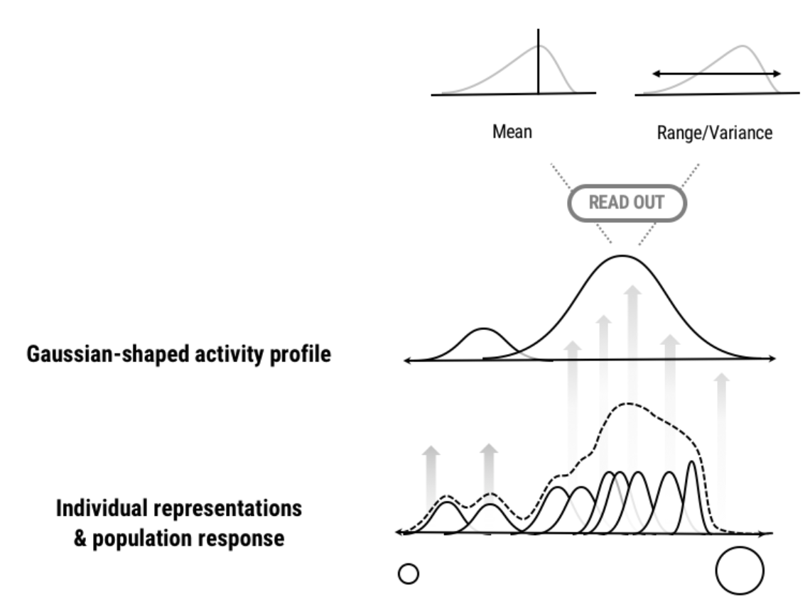
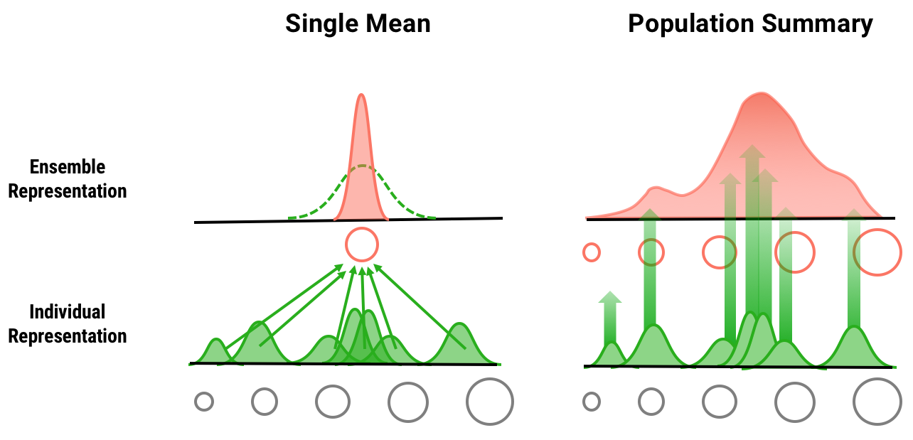

The visual system does not compute a single mean but summarizes a distribution
Journal of Experimental Psychology: Human Perception and Performance 2020
My research thus far can be categorized into three topics
How do humans summarize complex visual information?
The world is filled with plethora of visual complexities but our human vision cannot process all. The visual system is essentially capacity-limited and so it selects and summarizes the visual input to effectively perceive through the world. My research investigated summary statistics; how the human vision encodes the redundancies and complexities of the visual information.
* Supported by the National Research Foundation of Korea (NRF) grant funded by the Korea government (MSIT), “Efficient encoding of visual information: average and variance.”
Journal of Experimental Psychology: Human Perception and Performance 2020
Poster at Annual Meeting of the Vision Sciences Society (2019)
Talk at Annual Meeting of the Korean Society of Cognitive and Biological Psychology (2019)
Poster at the Annual Meeting of Korean Society of Cognitive Science (2018)
Can we evaluate graphic user interfaces by tracking user’s gaze and brain-signals?
project in collaboration with SK Broadband
We tested and compared the usability of three different TV streaming app UIs and the viewer’s gaze patterns. By analyzing the distribution of attention on the interface, we derived design problems and ways they could be improved.
project in collaboration with Samsung Electronics
We developed a model that can categorize user's first impression of the TV UI based on viewer's EEG signals and gaze data during their first viewing experience.
Case study presented at the HCI Korea Annual Conference (2017)
UX design, interaction design, web development etc.
Talk presented at the HCI Korea 2018 Annual Conference (2018)
UX design proposal submitted as part of a class project [GSI7335: Interaction & Content Planning for Internet of Things]